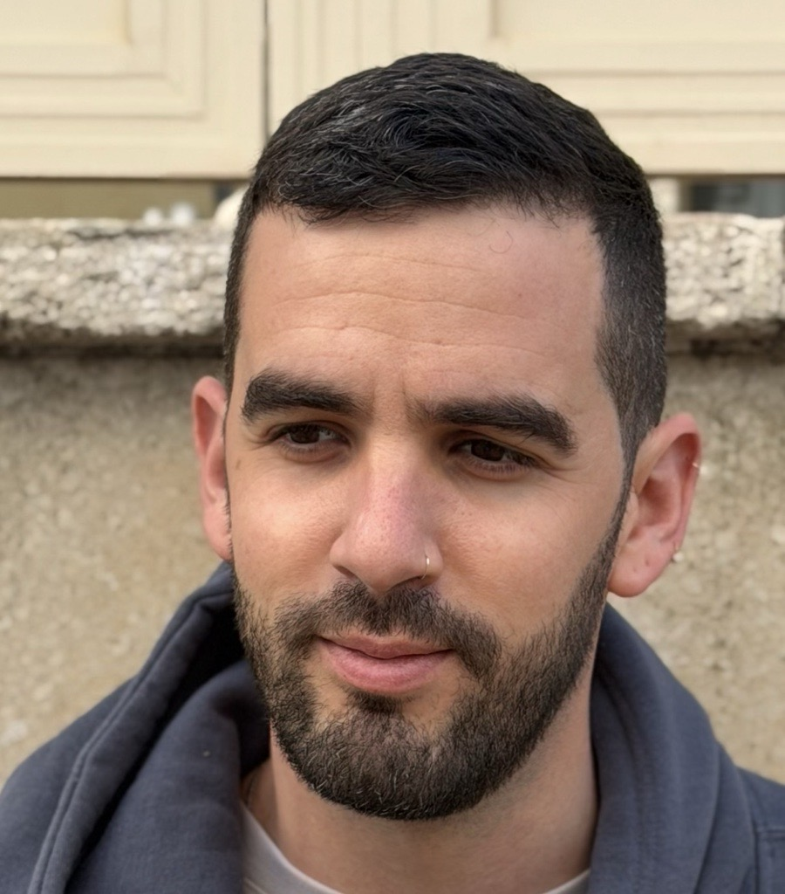

InfoNCE Induces Gaussian Distribution
A theoretical analysis showing how Gaussian structure emerges in learned representations under contrastive objectives.
I am a researcher working at the intersection of machine learning theory, representation learning, and trustworthy AI. I received my BSc. and MSc. from the ECE faculty at the Technion, where I continue my PhD studies. As a PhD candidate in the Technion, under the supervision of Prof. Guy Gilboa, I study the geometric and probabilistic structure of learned representations. My work spans theory, conceptual frameworks, and practical methods, aiming to uncover underlying structure in foundation vision representations and leverage it for a range of applications. In parallel, as a Senior Researcher at Fujitsu Research of Europe, I work on AI security, safety, and trust. This work focuses on detection and evaluation methods to ensure safety, reliability, and control in the rapidly evolving landscape of LLM-based agentic systems.

A theoretical analysis showing how Gaussian structure emerges in learned representations under contrastive objectives.